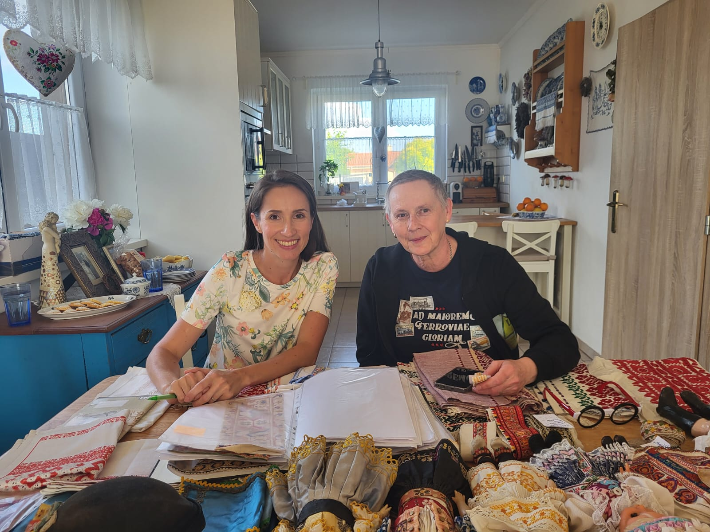

An interest in my family history brought an entirely new dimension to my life. With this article I want to warn you about the main risk of tracing your family roots — and that is an acute feeling of not having enough time. Uncovering the lives of ancestors tends to snowball in a big way, and it is very likely to pull you into a spiral that is very hard to stop. The reasons are simple.
Every story, every anecdote, every new piece of information, every new photograph — brings such excitement that it quickly becomes an addiction and you simply have to surrender to it. At least that's how it was for me.
It started with the embroideries and my wanting to know where they came from. After many years I returned to my grandfather's unfinished autobiography (Aj slnko, aj hrmavica — "Both sun and thunder"), where I didn't learn about the embroideries directly, but I came to know him better — and through his descriptions and stories I gradually became acquainted with the ancestors who came before him. I realised what a privilege it is that this branch of the family left us such a thoroughly documented record of the whole lineage. Beyond the autobiography, I also came across his genealogical work Šenšelovský rod (The Šenšel Lineage) and a publication called Pevný buď (Be Steadfast) — about the life and work of his father, my great-great-grandfather Ľudovít Šenšel.
Gradually the connections began forming in my mind — who was related to whom, where and when — and I started asking questions at home. I already knew my parents' memories fairly well, so I wanted to search further. I'm not generally an extrovert and I usually avoid initiating first contact, but suddenly I had a goal in my head that was bigger than my hang-ups, and reaching out to people came naturally. Thanks to this search, over the course of a few months I got to know so many wonderful people — both within the family and people connected with folklore and history — and their response exceeded all my expectations. Every one of them was willing to share whatever information they had or point me toward suitable sources.

Because the yearbooks of Živena also crossed my path, I read their content in an entirely different way than I would have a few years ago. I read them through the lens of my ancestors — and individual contributions in Živena gave the whole picture of them and the period in which they lived a context I hadn't had before.

Thoughts about the past from 100 years ago now accompany me daily. For years I've had at home a few old pieces of ceramics, embroidered doilies and tablecloths, old book editions and an antique sewing machine. These objects had until now held mostly aesthetic value for me — but suddenly I find myself thinking about who might have embroidered the doily I keep on my coffee table, which of the women in my family sewed dresses on this sewing machine, how many Šenšel family guests drank coffee from the beautiful cups I love so much, whose fingers leafed through the same old book I'm holding today.
I realised that knowing my ancestors connects me to them. Even though our lives could not have overlapped, we carry so much of their legacy within us — we share character traits, talents and failings that very often have their origin somewhere long ago. Personally, I've started to like myself more because of this. Knowing that before me there were remarkable people who were not absolutely perfect — and who in the case of my grandfather and great-grandfather were not afraid to acknowledge their own shortcomings — makes me kinder to myself and fills me with great pride in my roots. I've found new role models for my life in them. The real kind — the ones I actually want to be inspired by.
I feel the same reading Živena. Women who fought with love — not for themselves or their own individual gain, but for the rights and better standing of all women in society. They championed respect for women and recognition of all their roles in everyday life — and they didn't present it as complaint, but as reality. That reality from a hundred years ago is unfortunately similar in many ways to today's. I admire their courage, humility and selflessness. For me personally, it is a challenge to return to such role models — because in today's overwhelming focus on the self, it is easy to get lost.